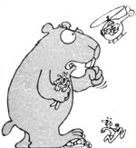
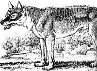
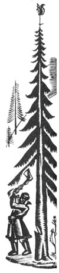

Scientists who design underground storage facilities for low-level nuclear waste must plan for the worst, but what with earthquakes, floods, and a host of other major natural disasters to consider, who'd have ever thought to worry about gophers? Now researchers at the Los Alamos National Laboratory in New Mexico are holding their breath, hoping that the burrowing activities of these rodents won't cause serious problems at disposal sites.
Within a period of 13 months, gophers dug 1.7 miles of tunnels through a 2.4-acre dump, sometimes moving as much as 130 pounds of earth each day. So far, none of the soil they've brought to the surface has a higher-than-normal level of radioactivity. Researchers don't expect the digging to present an immediate problem; the waste is buried four feet deep, and the gophers' activities seem to have been restricted to the top three feet of soil. But with tons of earth being shuffled around each year, scientists are beginning to wonder how long it will be before radioactive earth begins showing up on the surface.
Alaskan wolves have an un-usual ally-the Federal Com munications Commission- (FCC). The FCC ordered Alaskan state officials to cease using radio tracking equip ment to locate wolves for killing.
The FCC issues experimental broadcast licenses that permit radio collars and tracking equipment to be used to monitor certain animals for the purpose of observation and study. Alaskan state officials had been using the collars to locate wolves-individually and even in packs-which were then shot as part of a plan to reduce the wolf population in that state. Biologists estimate that there are 6,000 to 10,000 wolves in Alaska, compared with only 1,200 in all of the lower 48, and state game officials argue that a cyclical "boom" in the wolf population is seriously limiting the size of moose and caribou herds. Opponents of the kill blame the reduced herds on increased hunting.
At any rate, the FCC believes that using the radio equipment to assist in wolf kills "no longer constitutes a research project" and has ordered the state to stop the practice until further notice. If the state does not comply, it could lose a variety of radio-operating licenses, including those for police, fire, and other emergency and state administration broadcasts.
A Huntington, West Virginia, courtroom was recently the scene of a lawsuit against three manufacturers whose as bestos products were said to have caused health problems in railroad workers. When the hearing was suddenly moved to a courtroom 15 miles away, the reason given for the change of venue was that workers were in the process of removing asbestos from the Huntington courthouse.
In an attempt to snare ail unarmed United States cruise missile streaking across the Canadian Arctic on a test run, protesters in Wandering River, Alberta, used helium balloons to loft a giant fishnet across the missile's path. "It flew right over the top of the net," one of the protesters lamented.
At last-the space age offers an alternative to the cold, cold ground. Sometime in 1986, undertakers will begin using privately owned rockets to launch human remains into outer space. One morticians' group that has contracted for a space launch the Celestis Group of Melbourne, Florida, Florida, plans to reduce cremated remains by further heating and then place them. in one-centimeter-by-three-centimeter capsules printed with a religious symbol and the name and Social Security number of the deceased.
A mausoleum attached to the nose of the booster rocket will carry 13,000 or so of the capsules aloft into the Van Allen radiation belts, where it will remain in orbit for around 63 million years. Reflective materials will coat the mausoleum to help earthly relatives identify the stellar sepulcher as it passes overhead.
New evidence that rising concentrations of carbon dioxide are affecting the environment has come as something of a surprise: Excess CO 2 , seems to be increasing the growth rates of normally slow-growing bristlecone and limber pines in the western mountains. These growth rates have doubled since 1850, apparently because of the effect of CO 2 , which promotes photosynthesis. While some scientists speculate that this might be good for agriculture, others point out that it could be a disaster for natural communities, since not all plants are equally responsive to CO 2 , and unusually rapid growth of one species could possibly mean the extinction of many others.
|
|
 |
 |
|
|
 |
|